01
1970 — 1998
TYRRELL
THE BEGINNING↗
Carregando notícias...
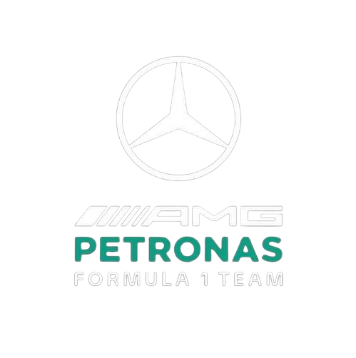
MERCEDES-AMG PETRONAS FORMULA ONE TEAM
Conheça a dupla que representa a Mercedes na Formula 1.
A Mercedes-AMG Petronas é uma das equipes mais dominantes da história da Fórmula 1 moderna. A equipe oficial retornou à categoria em 2010, após a compra da Brawn GP pela Mercedes, iniciando um novo capítulo de sucesso.
Entre 2014 e 2020, a equipe viveu uma das maiores eras de domínio já vistas na F1, conquistando múltiplos títulos consecutivos de construtores e pilotos. Nesse período, destacou-se a parceria com Lewis Hamilton, além de carros extremamente eficientes e inovadores como o W05 e o W11.
Mesmo após o fim da era híbrida dominante, a Mercedes continua sendo uma das principais forças do grid, investindo fortemente em tecnologia e desenvolvimento. A equipe segue em busca de retornar ao topo absoluto da Fórmula 1 com sua nova geração de pilotos e projetos.

Na Mercedes-AMG Petronas, o desempenho não nasce do acaso, mas de uma cultura baseada em precisão extrema, responsabilidade coletiva e melhoria constante. Sob a liderança de Toto Wolff, a equipe construiu um ambiente onde a excelência não é uma meta ocasional, mas uma exigência diária. A filosofia central é simples: trabalhar com intensidade, mas sem medo de errar, aprendendo rapidamente com cada detalhe para evoluir continuamente.
Um dos pilares mais fortes da equipe é a chamada “cultura sem culpa”. Em vez de apontar erros para indivíduos, a Mercedes entende falhas como responsabilidade do sistema e da liderança. Isso cria um ambiente seguro onde engenheiros, estrategistas e pilotos podem se expressar livremente, permitindo decisões mais rápidas e inteligentes sob pressão máxima.
Cada componente do carro é desenvolvido com obsessão por detalhes. A equipe acredita que vitórias são construídas milésimo por milésimo, com foco absoluto em consistência e eficiência técnica.
Mesmo após anos de domínio, a Mercedes mantém uma mentalidade de “caçadora”, nunca se vendo como imbatível. A autocrítica constante e a dúvida construtiva são vistas como ferramentas para evitar acomodação.
A equipe evita o culto a superestrelas. O foco está no coletivo: milhares de pessoas trabalhando como uma só unidade, onde cada função tem impacto direto no resultado final dentro da pista.
A força da Mercedes não está apenas na tecnologia ou nos títulos, mas na forma como a equipe transforma pressão em desempenho. É uma organização que combina disciplina, liberdade controlada e obsessão por evolução constante — onde vencer não é um momento, mas um processo contínuo.
Em Brackley e Brixworth, no Reino Unido, existe um ecossistema onde cada detalhe é tratado com precisão extrema. A fábrica da Mercedes não é apenas um centro de desenvolvimento, mas o núcleo de uma operação que busca consistência, eficiência e domínio em cada milésimo de segundo na Fórmula 1.
Muito antes de um carro entrar na pista, a corrida já está em andamento dentro da fábrica. Engenheiros analisam dados em tempo real, especialistas em aerodinâmica refinam cada superfície do carro e estrategistas simulam cenários complexos para garantir que nenhuma oportunidade de performance seja desperdiçada.
Cada componente é projetado com foco absoluto em eficiência e confiabilidade. Na Mercedes, pequenas variações podem definir campeonatos, por isso a obsessão por precisão é parte da cultura da equipe.
Antes de qualquer corrida, milhares de simulações são executadas. A equipe utiliza tecnologia avançada para prever cenários, otimizar estratégias e preparar pilotos e engenheiros para qualquer situação possível na pista.
A força da Mercedes está na disciplina coletiva. Cada membro da equipe trabalha com foco em excelência contínua, onde colaboração e responsabilidade compartilham o mesmo objetivo: performance consistente.
“Na Mercedes, performance não é um momento. É um padrão.”
A verdadeira origem da velocidade da Mercedes não está apenas nos carros, mas na estrutura que os cria. Dentro da fábrica, inovação, disciplina e precisão trabalham juntas para sustentar uma das organizações mais dominantes da Fórmula 1 moderna.
Das origens à atual Mercedes na Fórmula 1.
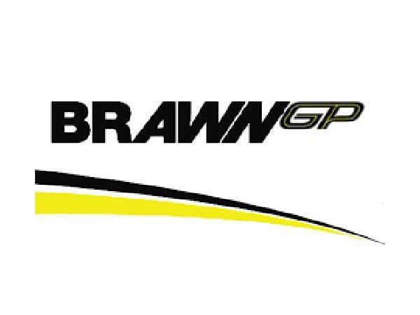
| 🏎️ Chassi | W17 |
| ⚙️️ Motor | Mercedes AMG F1 |
| 📅 Fundação | 1954 |
| 📍 Sede | Brackley, Reino Unido |
| 🥇 Primeiro Campeão | Juan Manuel Fangio 🇦🇷 |
| 🏆 Último Campeão | Lewis Hamilton 🇬🇧 (2020) |
| 👑 Maior Campeão | Lewis Hamilton 🇬🇧 6x |
| 🔥 Melhor Temporada | 2016 — 19 vitórias |
| 👬 Pilotos Atuais |
🇬🇧 George Russell 🇮🇹 Kimi Antonelli |
Posição campeonato
Pontos
Pódios
Vitórias
Top 5
Avg Grid
| Etapa | GP | Antonelli | Russell |
|---|
MERCEDES 2026
Mercedes
Formula 1 championship points evolution
As principais figuras responsáveis pela direção, engenharia e desempenho da Mercedes.
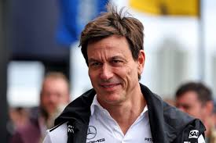
Responsável pela direção executiva e comercial da Mercedes.
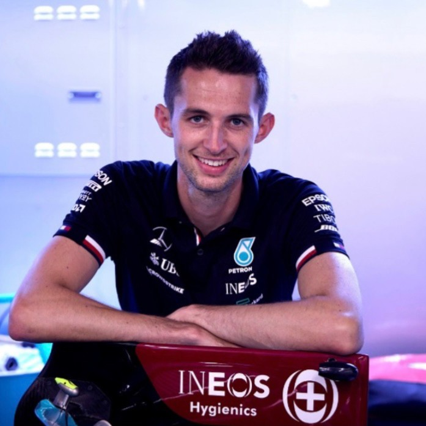
Coordena as estratégias da equipe durante os finais de semana de corrida.
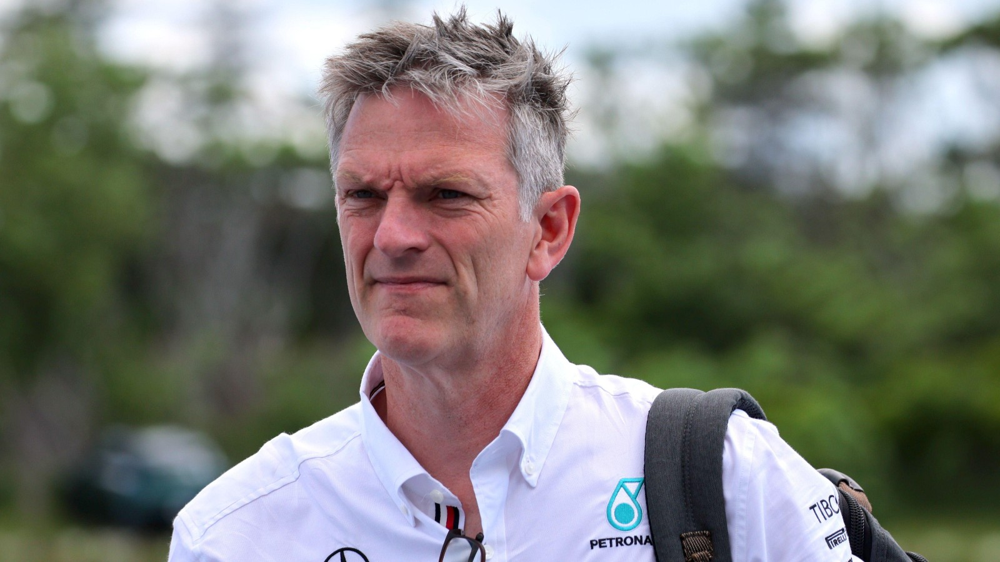
Atua no desenvolvimento técnico e na área de performance da equipe.
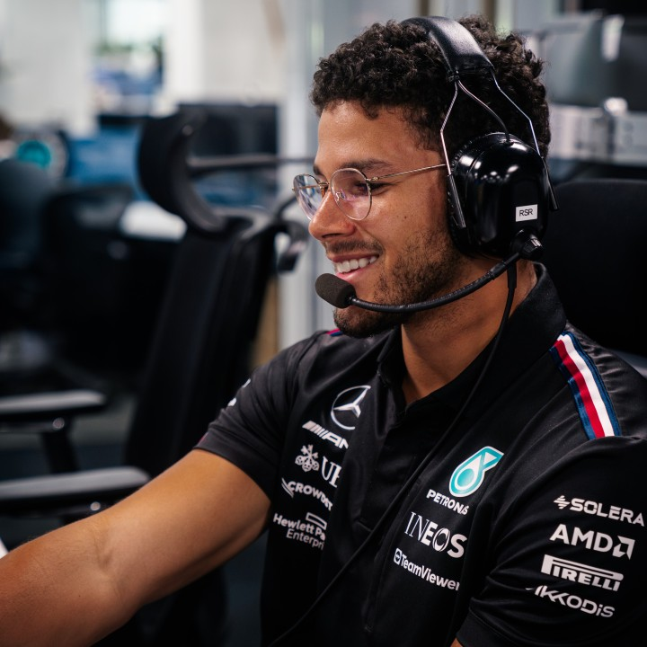
Coordena o desenvolvimento do carro.
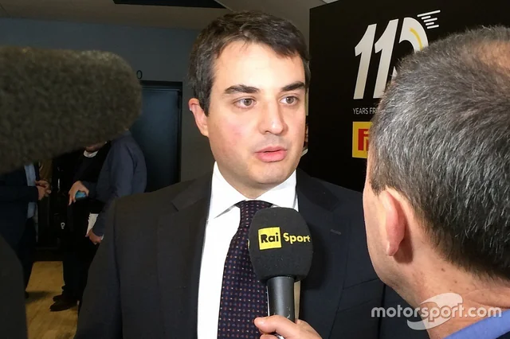
Coordena o conceito e o design do carro da mercedes.
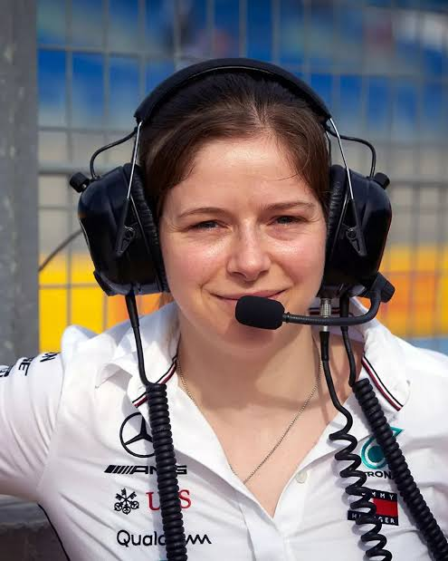
Coordena as estratégias da equipe durante os finais de semana de corrida.
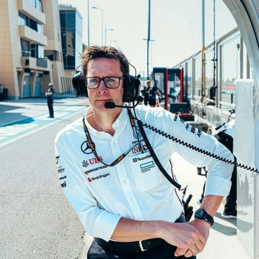
Responsável pela coordenação das áreas de engenharia da equipe.
Na Fórmula 1, desempenho não depende apenas do piloto. Por trás de cada corrida existe uma estrutura altamente integrada, formada por centenas de especialistas que transformam engenharia, dados e estratégia em execução perfeita dentro da pista.
Os pilotos trabalham em sintonia com os engenheiros, contribuindo com feedback técnico, análise de comportamento do carro e evolução constante ao longo da temporada.
Utilizando simuladores de alta precisão, testam configurações, estratégias e atualizações antes delas chegarem à pista, reduzindo riscos e otimizando desempenho.
Responsável pela análise profunda de telemetria, pneus e equilíbrio do carro, garantindo que cada detalhe esteja dentro da janela ideal de performance.
Atua em tempo real durante os GPs, tomando decisões estratégicas via rádio e ajustando o plano de corrida conforme as condições da pista.
Desenvolve soluções para fluxo de ar, downforce e eficiência aerodinâmica, buscando o equilíbrio ideal entre velocidade e estabilidade.
Responsáveis pela montagem e manutenção do carro, executando pit stops extremamente rápidos e garantindo confiabilidade em cada detalhe.
Analisa dados em tempo real como pneus, clima e adversários para definir decisões críticas durante a corrida.
Monitora milhares de parâmetros em tempo real, fornecendo informações essenciais para decisões técnicas e estratégicas.
Desenvolve novas soluções técnicas e tecnológicas para manter o carro competitivo ao longo da temporada.
Cria sistemas de análise e ferramentas digitais que permitem decisões rápidas e precisas dentro e fora da pista.
Coordena o transporte global de carros, peças e equipamentos, garantindo operação perfeita em todas as etapas do campeonato.
Gerencia a imagem global da equipe, conectando tecnologia, fãs e patrocinadores através da presença digital e mídia.
Antes de acelerar nas pistas, um carro de Fórmula 1 passa por milhares de horas de desenvolvimento. Na Mercedes, cada detalhe é definido através de engenharia de precisão, simulações avançadas e validação contínua feita por uma equipe global de especialistas.
O projeto começa muito antes da temporada. Engenheiros definem arquitetura aerodinâmica, filosofia de performance e objetivos técnicos que irão guiar todo o desenvolvimento do carro.
A equipe utiliza CFD e modelos digitais avançados para analisar o fluxo de ar e otimizar cada superfície do carro antes da construção física.
Testes em escala reduzem incertezas aerodinâmicas. Cada ajuste é validado com precisão para garantir estabilidade e eficiência em diferentes condições.
Componentes em fibra de carbono são produzidos e integrados com extrema precisão, garantindo confiabilidade e performance em cada detalhe do carro.
Pilotos e engenheiros refinam o comportamento do carro em simuladores, ajustando configurações antes mesmo da primeira corrida.
O desenvolvimento não termina na fábrica. Durante a temporada, o carro recebe atualizações constantes baseadas em dados reais da pista.
“Na Mercedes, um carro não é construído para ser finalizado. Ele é construído para evoluir.”
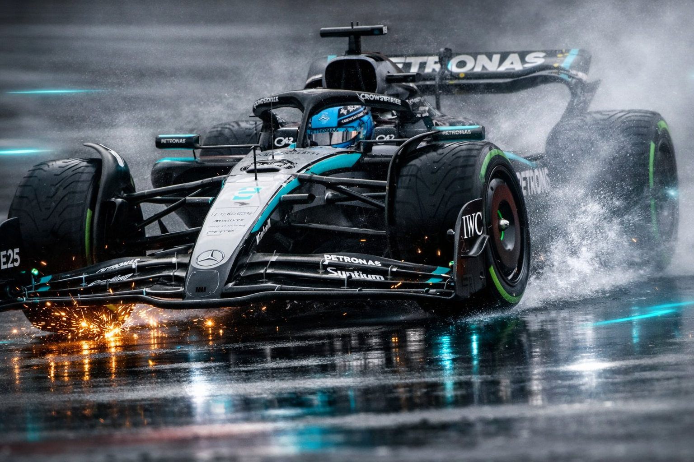
🏁 Corridas
🥇 Vitórias
⚡ Poles
🥉 Pódios
📈 Pontos no Total
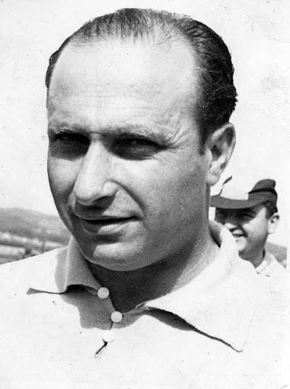
🇦🇷 Fangio
1° 🏆🇦🇷 Fangio
2° 🏆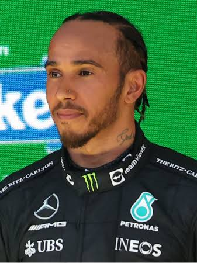
🇬🇧 Hamilton
2° 🏆🇬🇧 Hamilton
3° 🏆🇩🇪 Rosberg
1° 🏆🇬🇧 Hamilton
4° 🏆🇬🇧 Hamilton
5° 🏆🇬🇧 Hamilton
6° 🏆🇬🇧 Hamilton
7° 🏆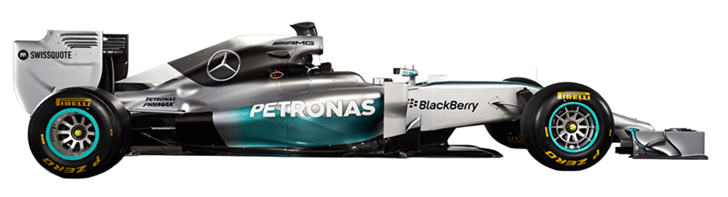
Hamilton
Rosberg
Hamilton
Rosberg
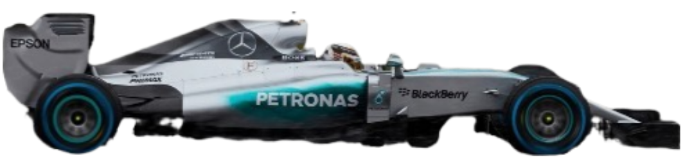
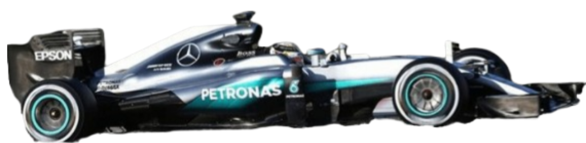
Rosberg
Hamilton

Hamilton
Bottas
Hamilton
Bottas
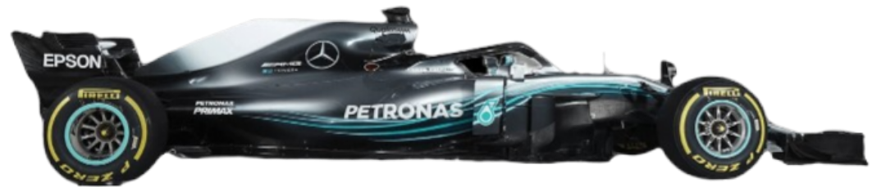
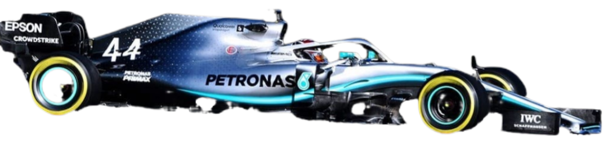
Hamilton
Bottas
Hamilton
Bottas
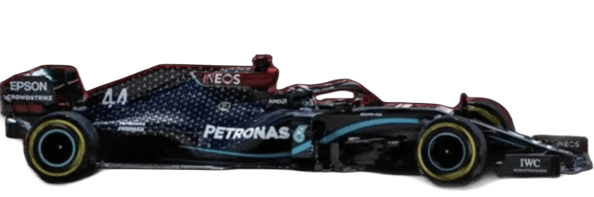
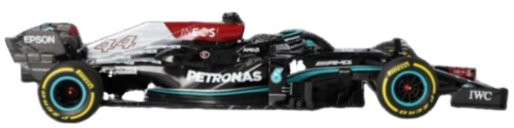
Hamilton
Bottas
Dominou a era inicial da Mercedes
Era dominante da Mercedes
Quebrou a hegemonia de Hamilton

Retorno lendário e base da era moderna
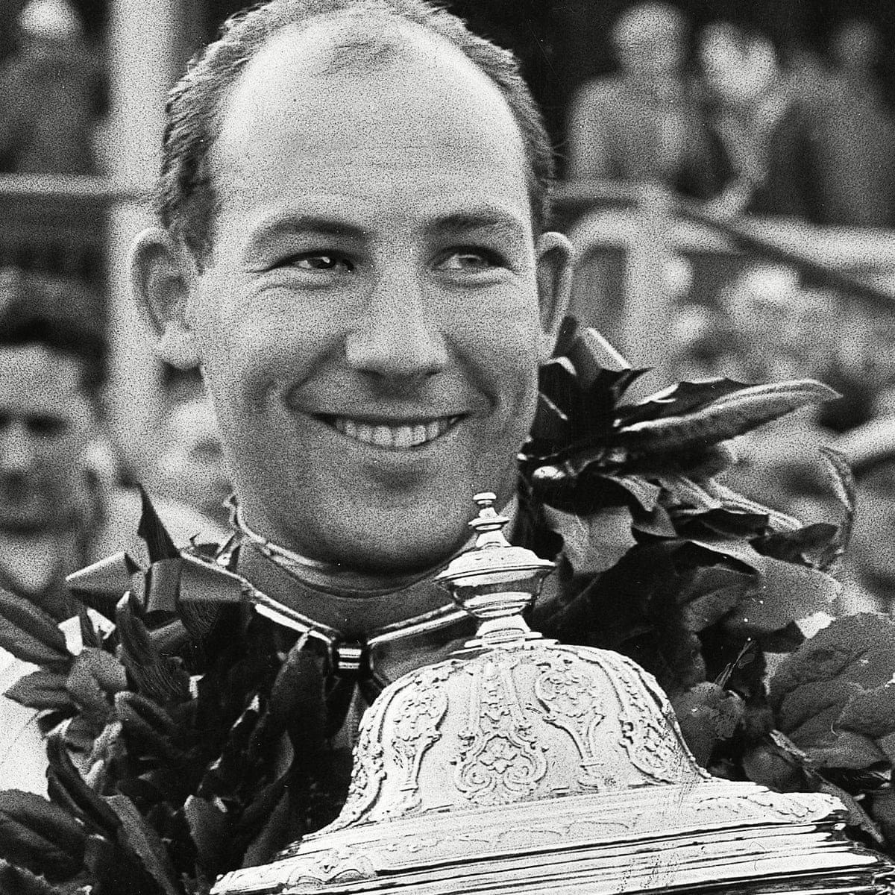
Ícone da era clássica
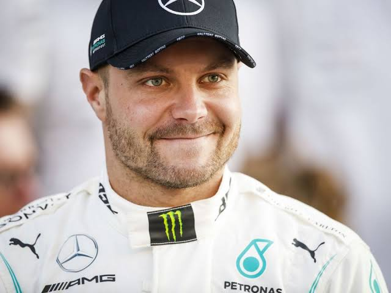
Peça chave na era dominante